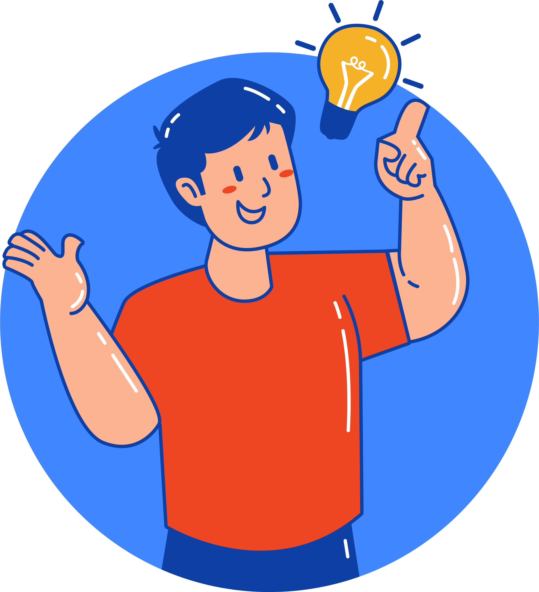

What is A Takeaway?
Intro
A successful expository essay always ends with a meaningful takeaway. Instead of simply repeating your main arguments word for word, a great takeaway provides a fresh conclusion that connects your topic to the real world. Think of it as a parting gift; it ensures your audience walks away with a memorable final thought. To create an effective takeaway, you should look toward the future or offer a powerful piece of advice. It should serve as the ultimate lesson or warning you want people to remember long after they have closed your page. By linking your specific ideas to a bigger picture, you give your entire essay a much stronger purpose.
Give it a try
📝 Please spot the takeaway in the following paragraph and click on it 📝
In conclusion, reducing our daily screen time is not just about avoiding eye strain or getting better sleep. While setting phone limits helps us regain control over our schedules, the real value lies in reclaiming our offline lives. Ultimately, by disconnecting from our digital screens, we choose to reconnect with the physical world, fostering deeper human connections and living more intentionally.

- It creates a lasting impression: It goes beyond basic advice like "put down your phone" and reminds the reader how this habit directly changes their lifestyle."
- It elevates the broader context: It connects a small daily habit (screen time) to a bigger, meaningful theme (human connection), giving the reader an inspiring goal to achieve.